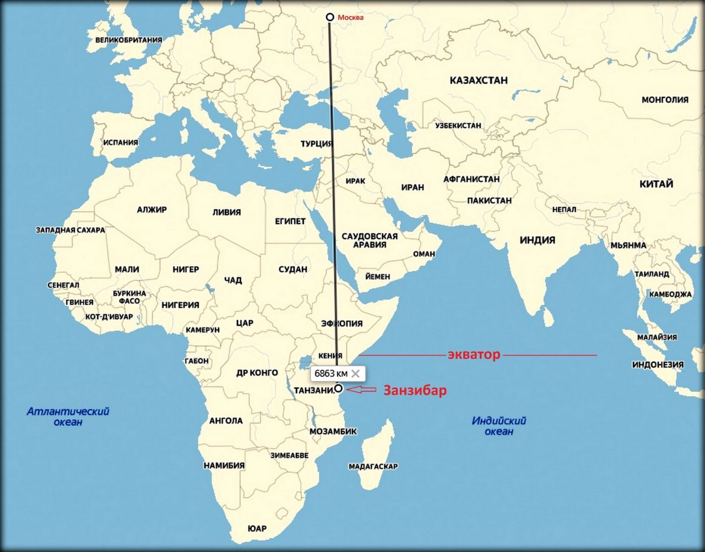
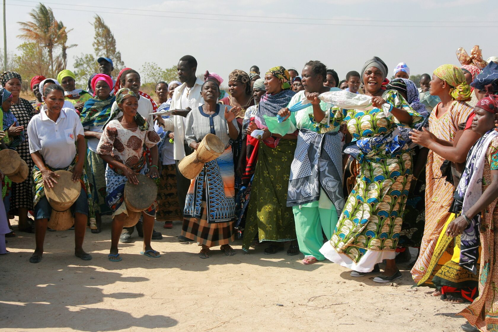
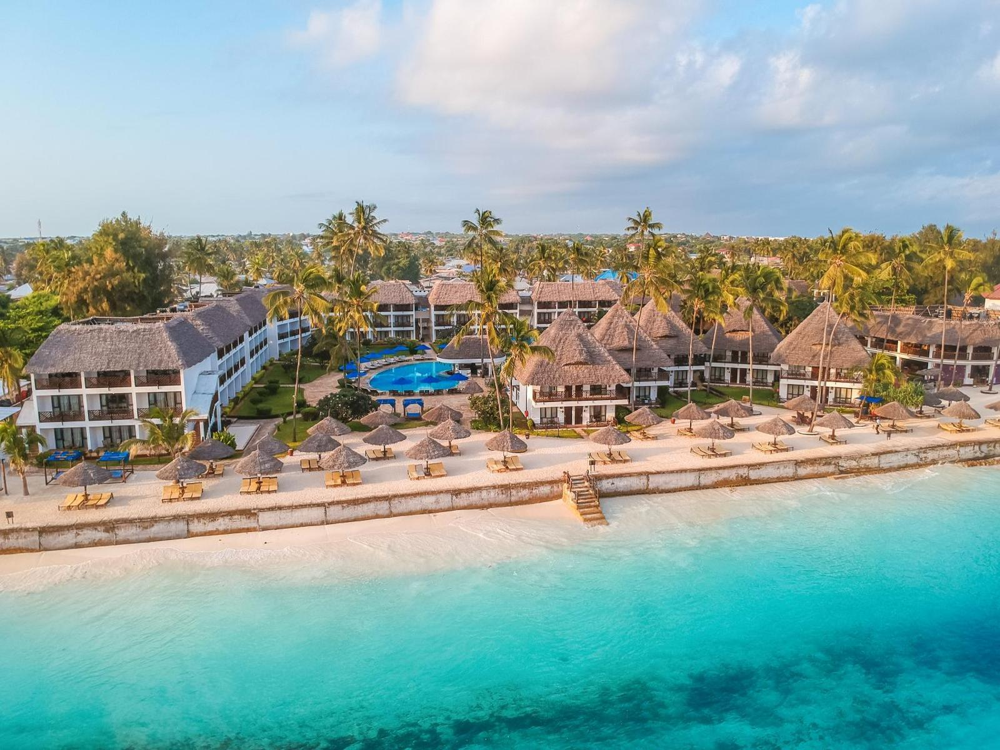

Памятка: Танзания
Туристам, выезжающим в танзанию
Перед отъездом
Проверьте наличие необходимых для поездки документов:
● заграничный паспорт (действителен на момент окончания поездки, имеет не менее 2-х свободных страниц для проставления визы);
● ксерокопия загранпаспорта (может пригодиться при утрате загранпаспорта и в случае непредвиденных обстоятельств);
● авиабилеты или маршрут/квитанции электронного билета;
● ваучер;
● страховой медицинский полис.
Правила въезда и пребывания на маврикии
Перед вылетом необходимо заполнить онлайн-форму «Mauritius All-In-One Travel Form» на сайте https://safemauritius.govmu.org/. В течение одной или двух минут вы получите электронное письмо от noreply@mauritiustravelform.com с заполненным PDF-документом.
Пожалуйста, распечатайте документ на отдельном листе и подпишите. Предъявите этот документ вместе с любыми другими обязательными проездными документами в органы пограничного контроля и здравоохранения по прибытии на Маврикий, а также в вашу авиакомпанию, если это потребуется.

В случае путешествия с детьми или беременности:
Несовершеннолетний гражданин РФ, следующий совместно хотя бы с одним из родителей, выезжает из РФ по своему загранпаспорту.
Несовершеннолетний российский гражданин, выезжающий из Российской Федерации без сопровождения родителей, должен иметь при себе кроме заграничного паспорта нотариально оформленное согласие родителей на его выезд за границу с указанием срока выезда и государство, которое он намерен посетить.
Без необходимости оформления для ребенка отдельного заграничного паспорта несовершеннолетний гражданин РФ до 14 лет может выехать совместно хотя бы с одним из родителей, если он вписан в заграничный паспорт родителя, оформленный по старому образцу (к паспорту старого образца относится паспорт не биометрический, оформленный в соответствии с постановлением Правительства Российской Федерации от 14 марта 1997 г. № 298). В паспорт родителя в этом случае обязательно должна быть вклеена фотография ребенка, независимо от его возраста, на которой должна стоять печать паспортно-визовой службы. Отсутствие фотографии или печати является основанием для отказа ребенку в пересечении границы.
Выезд из РФ несовершеннолетних детей, сведения о которых внесены в паспорта сопровождающих их родителей, оформленные по старому образцу, осуществляется по срокам действия паспортов. На заграничные паспорта, оформленные по новому образцу (биометрический), распространяются нормы Постановления Правительства РФ №13 от 19 января 2010 года о том, что внесение сведений о детях в паспорт, удостоверяющий личность родителя, не дает права ребенку на выезд за пределы территории РФ без документа, удостоверяющего личность гражданина РФ за пределами территории РФ.
При следовании несовершеннолетнего российского гражданина через государственную границу РФ совместно с одним из родителей предъявлять письменное согласие второго родителя не нужно, если только от него ранее в пограничные органы не поступало заявление о несогласии на выезд из РФ своих детей. Если у несовершеннолетнего ребенка и выезжающего с ним родителя разные фамилии, то рекомендуем взять с собой нотариально заверенную копию свидетельства о рождении для подтверждения родства. На практике отсутствие такого подтверждения служило основанием для отказа ребенку в пересечении границы.
Беременным женщинам
Перед полетом мы рекомендуем ознакомиться с правилами авиакомпании на необходимость предоставления письменного согласия врача на полет, а также иных документов для осуществления авиаперелета. Сотрудники авиакомпании имеют полное право отказать в авиаперевозке или потребовать медицинское освидетельствование в аэропорту вылета в случае нарушения правил.

Собирая багаж:
Рекомендуем все ценные вещи, документы и деньги положить в ручную кладь и взять с собой в самолет. В багаж следует упаковать все металлические острые и режущие предметы (маникюрные ножницы, пилочки для ногтей, перочинный ножик и т. п.), а также любые жидкости, гели и аэрозоли (за исключением детского питания и лекарств, если в них есть необходимость) — проносить подобные предметы в ручной клади запрещено.
Не забывайте собрать и взять с собой аптечку первой помощи, которая поможет при легких недомоганиях, сэкономит время на поиски лекарственных средств и избавит от нежелательного общения на иностранном языке.

В РОССИЙСКОМ АЭРОПОРТУ ВЫЛЕТА/ПРИЛЕТА
Перед выездом в аэропорт получите дополнительную информацию о возможно произошедших изменениях в условиях вылета, используя сайт авиакомпании, выполняющей рейс, или по телефону ее справочной службы.
Рекомендуем заранее, не позднее чем за три часа до вылета, прибыть к месту регистрации пассажиров для прохождения установленных процедур регистрации, оформления багажа, и выполнения требований, связанных с пограничным, таможенным, санитарно-карантинным, ветеринарным и другими видами контроля, установленными законодательством РФ.
Таможенный контроль до начала путешествия
Перед полетом рекомендуем проверять действующие правила вывоза физическими лицами наличной иностранной валюты из РФ, товаров и иных предметов на сайте Федеральной Таможенной Службы customs.gov.ru.
Обращаем внимание на то, что в настоящее время действуют ограничения. Внимание! Запрещено перемещение на выезде и въезде:
● культурных ценностей,
● объектов фауны и флоры, находящихся под угрозой исчезновения,
● оружия и боеприпасов к нему без разрешения уполномоченных органов. Незаконное перемещение товаров или валюты через таможенную границу РФ или их недекларирование, либо недостоверное декларирование влечет за собой административную или уголовную ответственность. Внимание!
Запрещено на выезде и въезде:
● принимать от посторонних лиц чемоданы, посылки и другие предметы для перевозки на борту воздушного судна.
Таможенный контроль по окончанию путешествия
Если вы не перемещаете через границу валюту и предметы, которые необходимо декларировать, то вам следует проходить зону таможенного контроля по «Зелёному коридору».
Актуальную информацию о ввозе валюты, товаров и иных предметов для личного пользования, вы найдете на сайте Федеральной Таможенной Службы customs.gov.ru.
Внимание!
Недекларирование товаров в случае превышения стоимостных или весовых норм, а также наличных денежных средств и (или) денежных инструментов влечёт за собой административную или уголовную ответственность.
Регистрация на рейс и оформление багажа
До начала поездки настоятельно рекомендуем уточнить время начала и окончания регистрации на рейс, а также время посадки на борт. Указанную информацию вы можете посмотреть на официальном сайте авиакомпании. Помните, что у разных авиакомпаний могут быть свои правила. Регистрация пассажиров и оформление багажа производятся на основании именного авиабилета или распечатанных на бумажном носителе маршрута и/или квитанции электронного билета, а также заграничного паспорта пассажира. При регистрации пассажиру выдается посадочный талон, который необходимо сохранять до момента возможного предъявления авиакомпании претензий по качеству предоставленных услуг авиаперевозки.
Перед посадкой на рейс рекомендуем проверить номер выхода и время начала посадки на рейс на информационном табло в аэропорту. Пассажиру, опоздавшему ко времени окончания регистрации пассажиров и оформления багажа или посадки в воздушное судно, может быть отказано в перевозке.
Каждый авиаперевозчик устанавливает свои нормы провоза багажа, а также габариты и вес ручной клади, провозимой в салоне самолета. Уточняйте данную информацию перед вылетом. За провоз багажа сверх установленной нормы бесплатного провоза багажа взимается дополнительная плата по тарифу, установленному перевозчиком. Перевозчик имеет право отказать туристу в перевозе багажа, вес или объем которого не соответствуют установленным нормам.
Фото: tild3039-3166-4636-b537-366535646636__secret-01.jpg
Паспортный контроль
Для прохождения пограничного контроля необходимо предъявить заграничный/внутренний российский паспорт. Пограничные органы ФСБ РФ при осуществлении пограничного контроля имеют право запрашивать у туристов дополнительные документы (авиабилет, посадочный талон, ваучер и т. п.), а также проводить опрос лиц, следующих через границу.
Санитарный контроль
Туристам сертификат о прививках не требуется. В летний период (с ноября по май) существует определенный риск заражения тропическими заболеваниями, передаваемыми через укусы комаров, — лихорадкой Денге и чикунгуньей — перед поездкой на Маврикий желательно сделать прививки против этих болезней.
Сырая вода для питья непригодна и требует очистки через фильтр с последующим кипячением.
Ветеринарный контроль
Животные подвергаются ветеринарному осмотру.
Если вы вывозите животных, то необходимо иметь комплект документов, подтверждающих, что они здоровы. Как правило, следует иметь:
● ветеринарный паспорт,
● справку о состоянии здоровья (выдается любой государственной ветеринарной клиникой, в справке указываются сведения о прививках по возрасту),
● справку из клуба СКОР или РКФ (в справке указывается, что собака не представляет племенной ценности, справки из других клубов вызывают вопросы на таможне),
● ветеринарное свидетельство с указанием о прививке от бешенства (последняя прививка от бешенства должна быть сделана не ранее чем за 12 месяцев и не позднее чем за 2 месяца до выезда, не нужно для котят и щенков до 3-х месяцев).
Собаки и кошки подлежат карантину на 5 дней, птицы и другие виды животных — 2 месяца. При ввозе в РФ животных и птиц необходимо иметь сопровождающее ветеринарное свидетельство, полученное в Государственной ветеринарной службе страны, где приобретено животное.
Запрещен ввоз на территорию РФ любых грузов животного происхождения, в том числе в ручной клади и багаже, при отсутствии письменного разрешения Главного государственного ветеринарного инспектора РФ. Без разрешения уполномоченных органов РФ запрещено ввозить и вывозить объекты дикой фауны и флоры, находящиеся под угрозой исчезновения.

В аэропорту прилета/вылета танзании
По прибытии в аэропорт Танзании нужно последовательно:
● пройти паспортный контроль,
● получить свой багаж,
● пройти таможенный контроль,
● выйти из здания аэропорта,
● найти встречающего гида с табличкой,
● предъявить гиду туристский ваучер.
Внимание! При осуществлении перелета стыковочными рейсами принимающая сторона осуществляет встречу только в конечном пункте прилета.
Паспортный контроль. Виза.
Стоимость визы по прибытии составляет 50 долларов США (оплата наличными или пластиковой картой). Сумма взимается с детей любого возраста, независимо от того, вписаны они к родителям или имеют свой паспорт. Оплата наличными и картой банка производится на разных стойках погранконтроля.
Внимание! Для граждан, не имеющих гражданства РФ, могут быть установлены иные правила въезда на территорию Танзании.
С 1 октября 2024 г. все иностранные граждане, прибывающие на Занзибар, обязаны приобрести страховку от Zanzibar Insurance Corporation. Данная страховка будет покрывать экстренные медицинские расходы, несчастные случаи, задержку багажа, кражу, юридические расходы, расходы на репатриацию и прочее при пребывании до 92 дней.
Страхование является обязательным требованием для всех путешественников, независимо от их существующих медицинских или туристических страховых покрытий. Стоимость страховки — 44 USD на человека, оплата наличными. Несоблюдение этого обязательного требования может привести к отказу во въезде на иммиграционных контрольно-пропускных пунктах.
Таможенный контроль в танзании
Импортировать или экспортировать национальную валюту Танзании нелегально.
Туристы могут ввозить сколько угодно валюты, ее не нужно декларировать.
Обменять валюту можно в уполномоченных банках, пунктах обмена валют и гостиницах. Кредитные карты (Access, Master Card, Visa, American Express, Euro card, Diners) принимаются в наиболее известных отелях по всей стране.
Пассажир имеет право беспошлинно ввезти с собой:
● 1 л ликера;
● 200 сигарет, 50 сигар или 250 г табака;
● 250 мл духов.
Все остальные предметы подлежат таможенному декларированию.
Огнестрельное оружие требует специального разрешения на ввоз.
В рамках усиления борьбы с браконьерством власти Республики Танзания в последнее время ужесточили контроль за перемещением через границу государства, в том числе сувенирной продукции из материалов животного происхождения (костей животных, ценных пород дерева, морских раковин и т. п.). Это коснулось и сувениров, приобретаемых в третьих странах. Во избежание недоразумений при въезде в Танзанию такую продукцию вместе с подтверждающими документами (чеки, сертификаты и т. п.) необходимо предъявлять сотрудникам таможни для составления декларации о ввозе. Ее наличие гарантирует беспрепятственный вывоз данных товаров из ОРТ. Необходимость оформления дополнительных документов — вывозных лицензий (помимо товарных чеков) — распространяется на сувенирные изделия животного происхождения, приобретаемые в Танзании. С учетом большого количества инстанций, занимающихся в стране лицензированием вывоза различной продукции, точную информацию о том, кто должен выдавать сертификат на конкретный вид товара, можно получить лишь в таможенных органах.
Морские раковины к вывозу запрещены.
Нарушение правил перемещения сувенирной продукции из материалов животного происхождения через границу Танзании приравнивается к серьезным правонарушениям и грозит длительным судебным разбирательством, выплатой крупных штрафов и, в отдельных случаях, тюремным заключением на срок до 5 лет.
Рекомендуем приобретать указанную сувенирную продукцию только в аэропортах при вылете из страны.
Правительством Танзании запрещен ввоз пластиковых пакетов как в багаже, так и в ручной клади (как на Занзибар, так и на материковую часть Танзании). Это распространяется и на упаковку багажа, и провоз одежды, косметики и прочих вещей персонального пользования в пластиковых пакетах. За ввоз пластиковых пакетов нарушители облагаются штрафом. Разрешается упаковка в пакеты ziplock (на замке).
В Танзании и на Занзибаре нет запрета на ввоз и курение электронных сигарет.
Танзания
Фото: tild6563-3039-4566-a335-316130386631_________.jpg
Республика Танзания является государством в Восточной Африке со столицей Додома. На севере граничит с Кенией и Угандой, на западе — с Руандой, Бурунди и Демократической Республикой Конго, а на юге — с Замбией, Малави и Мозамбиком. Восточной границей является Индийский океан.

Время
Разницы во времени с Москвой нет.
Климат
Субэкваториальный. На севере два сезона дождей (март — май и сентябрь — ноябрь), на юге — один (ноябрь — апрель). Температура воздуха очень комфортная и в среднем составляет +26…+27 °C.
Валюта
Танзанийский шиллинг.
Фото: tild3038-3739-4934-a432-366539333365__995689_big.jpg
Чаевые
В Танзании принято давать чаевые. Обычно в ресторане это 5-10 % от суммы счета.
Язык
Суахили, английский. На Занзибаре распространен арабский, в материковой части — множество местных языков группы банту.
Население
Примерная численность населения — 61 млн человек. 99 % населения — народы, относящиеся к восточному банту (130 племен), 1 % — индийцы, пакистанцы, европейцы, арабы.
Религия
На материковой части около 12 % населения придерживается местных традиционных верований, 30 % — мусульмане, 55 %-60 % — христиане, на Занзибаре почти 99 % населения исповедуют ислам.
Обычаи
Не рекомендуется производить фото- и видеосъемку аборигенов без их разрешения, тем более самостоятельно посещать дома местных жителей.
Экологическое законодательство Танзании запрещает использовать любые пластиковые пакеты.
В стране случаи мошенничества и воровства не редкость.
С 14.02.2021 года правительством Танзании установлены правила в отношении внешнего вида туристов в общественных местах и за пределами пляжа.
Запрещено появление в открытой, прозрачной, откровенной, пляжной одежде или купальниках, а также в коротких юбках, шортах и майках, не скрывающих живот, за пределами пляжа и отеля. Одежда должна прикрывать плечи, живот и колени. Нарушение установленных правил влечет за собой наказание в виде штрафа в размере от 2 000 долларов США и выше или тюремное заключение сроком до 5 лет.

Праздники и нерабочие дни
25 декабря — Рождество;
9 декабря — День независимости;
8 августа — День крестьянина;
12 января — День революции Занзибара;
26 декабря — День бокса.
Транспорт
Городской транспорт есть в крупных городах, он представлен обычными старыми городскими автобусами и микроавтобусами. В других населенных пунктах городской транспорт представляет собой хаотично передвигающиеся по городу и пригородам пикапы, маршрутные такси и рикши. Также вдали от больших городов ходит транспорт попроще — автобусы на шасси грузового автомобиля — «Дала-Дала». «Дала-Дала» связывают все города страны, они очень дешевы, часто лишены минимального комфорта. Постоянное расписание отправлений и прибытий транспорта отсутствует.
Фото: tild3837-3830-4739-b261-613732383634__daladala.jpg
Экстренные телефоны
Единый телефон служб спасения: 112,
скорая помощь: 133, 122,
полиция: 995,
пожарная служба: 999.

В отеле
В день приезда расселение осуществляется в соответствии с правилами, принятыми в отеле. Обычно начиная с 14:00 по местному времени. Просим ознакомиться на месте с условиями предоставления услуг в отеле и придерживаться установленных отелем правил.
В день выезда до наступления расчетного часа (как правило, 12:00) необходимо освободить свой номер и оплатить дополнительные услуги: телефонные переговоры, мини-бар, заказ питания и напитков в номер, массаж и др. Свой багаж можно оставить в камере хранения отеля и оставаться на территории отеля до прибытия трансфера.
Если вы не сдали номер до 12:00, стоимость комнаты оплачивается полностью за следующие сутки.
Внимание! налог за инфраструктуру
Цены на проживание не включают «INFRUSRUCTURE TAX» (Налог за инфраструктуру). Данный налог оплачивается на месте в отеле.
С 01.07.2023 налог будет взиматься с человека за ночь в размере:
● 5 usd для гостей, проживающих в отелях 5* и 4*
● 4 usd для гостей, проживающих в отелях 3* и 2*
● 2 USD для гостей, проживающих в гостиницах категории 1* и тех, которые не имеют категории

Напряжение электросети
Напряжение в сети: 220-240 В, частота 50 Гц В Танзании распространены розетки британского образца (трехконтактные), поэтому россиянам необходимо заранее приобрести адаптер.
ПРАВИЛА ЛИЧНОЙ ГИГИЕНЫ И БЕЗОПАСНОСТИ:
Перед путешествием мы советуем ознакомиться с «Полезными советами российским гражданам, выезжающим за рубеж», размещенными на сайте МИД РФ: https://www.kdmid.ru/info-for-traveling-abroad/useful-tips-for-russian-citizens-traveling-abroad/, а также с памяткой МИД РФ «Каждому, кто направляется за границу», и памяткой Роспотребнадзора выезжающим за рубеж.
Не нарушайте правила безопасности, установленные авиакомпаниями, транспортными организациями, гостиницами, местными органами власти.
Категорически не рекомендуем приобретать экскурсии и дополнительные туристские услуги в неизвестных туристских и экскурсионных агентствах. Вам может быть дана заведомо ложная информация о самой экскурсии, вам не будет гарантирована безопасность предоставленных услуг и исправность используемого оборудования, тем самым можно подвергнуть себя серьезной опасности.
Перед поездкой рекомендуется взять с собой ксерокопии основных страниц (с фотографией, личными данными, отметкой о регистрации) заграничного и внутреннего паспортов РФ. Паспорт (или ксерокопию паспорта), визитную карточку отеля носите с собой.
При возникновении транспортных аварий, конфликтов с полицией, другими органами местной власти необходимо поставить в известность представителя принимающей стороны или сотрудников посольства/консульства РФ.
В период путешествия турист не имеет права на коммерческую деятельность или иную оплачиваемую работу.
Мойте руки перед едой. Не пейте сырую воду, особенно из открытых водоемов. Для питья рекомендуется использовать минеральную воду, которую можно приобрести в магазинах и барах отеля.
Не рекомендуется носить с собой большие наличные суммы. Кражи денег и вещей у туристов случаются довольно часто, как и махинации с фальшивыми долларами. Не следует вынимать из кошелька на виду у всех большие суммы денег.
Покидая автобус на остановках и во время экскурсий, не оставляйте в нем ручную кладь, особенно ценные вещи и деньги. Важные документы, наличные деньги и драгоценности лучше хранить в сейфе номера. Если в номере нет сейфа, его можно взять в аренду за плату у администрации отеля или сдать на хранение портье в сейф на стойке регистрации.
Рекомендуется сдавать ключ от номера на стойку регистрации отеля, в случае его утери поставить в известность администрацию.
Во многих отелях запрещается выносить из номера полотенца на пляж или к бассейну. Не приносите на пляж полотенца или инвентарь из номера без разрешения персонала.
Если в номере стоит мини-бар, то все напитки и закуски, взятые из него, как правило, должны быть оплачены.
В СЛУЧАЕ ПОТЕРИ ПАСПОРТА
Незамедлительно обращайтесь в дипломатическое представительство, в консульское учреждение или в представительство МИД РФ, которое находится в пределах приграничной территории.
Вам необходимо получить свидетельство на въезд в РФ (REENTRY CERTIFICATE TO THE RUSSIAN FEDERATION), которое называется временным загранпаспортом. Выдается на срок до 15 дней для того, чтобы турист успел купить обратный билет и улететь на родину.
Для того чтобы вам выдали свидетельство на возвращение в РФ, необходимо представить следующие документы:
● основной документ, на основании которого будут предприниматься какие-либо действия, — заявление о выдаче свидетельства (образец заявления),
● две фотографии (цветные или ч/б, размер — 35х45 мм на однотонном фоне с четким изображением лица),
● внутренний паспорт РФ, также возможно предоставление других документов для подтверждения своей личности — водительских прав или служебного удостоверения.
Срок выдачи свидетельства на возвращение в РФ составляет 2 рабочих дня со дня регистрации заявления. Вернувшись в РФ, в трехдневный срок необходимо сдать свидетельство в организацию, выдавшую паспорт (ОВИР, МИД).
Все вышеперечисленные документы регламентированы пунктом 20 Приказа МИД РФ от 28.06.2012 года № 10304.

Посольство России в Танзании:
Адрес: P.O. Box 1905, Dar es Salaam Ali Hassan Mwinyi Road, Plot 3&5.
Тел.: +255-22-2666006/05.
Экстренный тел.: +255767919756.
Факс: +255-22-2666818.
E-mail: embrusstanz@mid.ru
Посольство танзании в рф
Адрес: Россия, Москва, ул. Большая Никитская, 51.
Тел.: +7 (495) 6902521,6902517.
Факс: +7 (495) 6902251.
E-mail: info@tanzania.ru http://www.tanzania.ru
ЖЕЛАЕМ ВАМ ПРИЯТНОГО ПУТЕШЕСТВИЯ!
По всем вопросам свяжитесь с нами любым удобным способом:
E-mail: trohin.zh@yandex.ru
Телефон: +7 (963) 649-18-52
Соцсети: вконтакте |telegram
Индивидуальный предприниматель трохин евгений альбертович
ИНН 503613656680 / ОГРН ИП 315507400016056
Заполните анкету
Мы подберем идеальный тур, исходя из ваших желаний и эмоционального настроя.